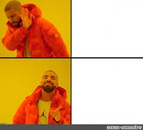
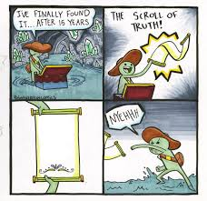

Bass-boosted: Es un arquetipo tipo Dank meme en video usado para representar la intensidad de un momento, puede ser apilcado en cualquier canción o efecto de sonido segun el contexto. Consta de aumentar el "bass" de un video ya estructurado.